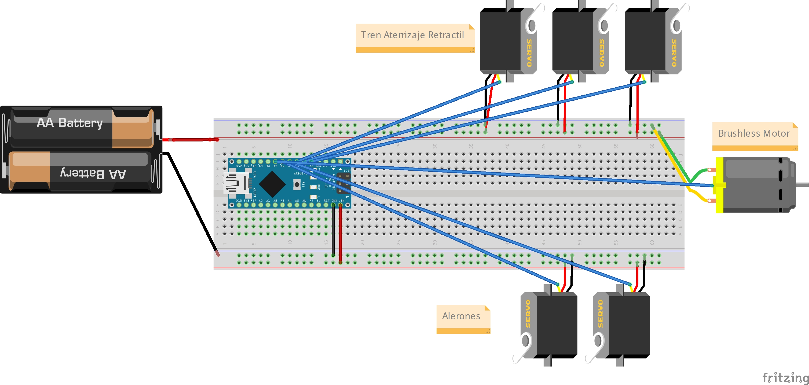

El hardware consiste en una placa Arduino NANO, con un Radio nRF24L01 para control de motor y servos, ademas una ESP32 CAM con MicroSD para grabar video. Este modelo en carton, es mas pequeño que la anterior version. Mide 70cm de largo, con un tren de aterrizaje retractil.
Esta PCB o placa personalizada del circuito de control para el motor brushless, Alerones y Tren Aterrizaje, se construye con una arduino NANO, para organizar y compactar de una forma optimizada el espacio
